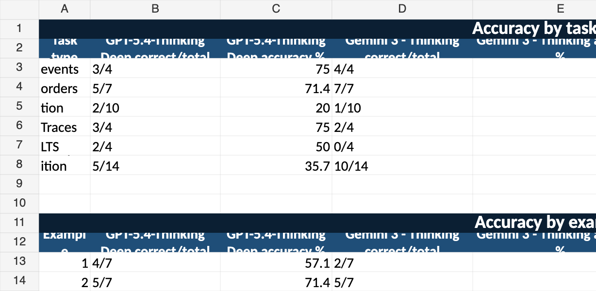

Analysis / annotation_tables_summary.docx
Question:
Based on these annotations. Please analyse the accuracy of each and every LLM per task type in a separate table. Please also produce a table summarising the performance of all LLMs per task type and per Example. Please note that "Judgment" and "Judgement" should be considered the same in counting the number of correct and incorrect tasks. If there is any discrepancy among the number or type of tasks across models, please report them. Please note that all models should be tested on the same (number of) tasks.
Answer:
I’ll treat “Judgment” and “Judgement” as the same label, inspect every annotation file in the zip, and check whether each model has the same task coverage before calculating accuracy.
I found 129 annotated task judgments across the 27 DOCX files. Coverage is balanced by model: each model has 43 judged tasks, with the same task counts per example.
Thought for 2m 19s
Done. I treated “Judgment” and “Judgement” as the same field, and counted any “Partially Incorrect” / “Incorrect?” as Incorrect.
You can download the full workbook here:
llm_annotation_accuracy_analysis.xlsx

SummaryCoverage notesGPT-5.4-Thinking DeepGemini 3 - ThinkingQwen 3.6 Plus - ThinkingRaw extracted judgments
Coverage check
No discrepancy was found in the number of tasks across models after normalization.
| Check | Result |
|---|---|
| Total judged tasks | 129 |
| Models | 3 |
| Judged tasks per model | 43 |
| Examples per model | 9 |
| Unknown/unclassifiable judgments | 0 |
I normalized these task-type variants for counting: “Identifying event order”, “Identifying event orders”, and “Event ordering” were counted as Identifying event orders. “Question type” was treated as equivalent to “Task type”.
GPT-5.4-Thinking Deep — accuracy by task type
| Task type | Correct | Incorrect | Total | Accuracy |
|---|---|---|---|---|
| Identifying events | 3 | 1 | 4 | 75.0% |
| Identifying event orders | 5 | 2 | 7 | 71.4% |
| Abstraction | 2 | 8 | 10 | 20.0% |
| Traces | 3 | 1 | 4 | 75.0% |
| LTS | 2 | 2 | 4 | 50.0% |
| Composition | 5 | 9 | 14 | 35.7% |
| Overall | 20 | 23 | 43 | 46.5% |
Gemini 3 - Thinking — accuracy by task type
| Task type | Correct | Incorrect | Total | Accuracy |
|---|---|---|---|---|
| Identifying events | 4 | 0 | 4 | 100.0% |
| Identifying event orders | 7 | 0 | 7 | 100.0% |
| Abstraction | 1 | 9 | 10 | 10.0% |
| Traces | 2 | 2 | 4 | 50.0% |
| LTS | 0 | 4 | 4 | 0.0% |
| Composition | 10 | 4 | 14 | 71.4% |
| Overall | 24 | 19 | 43 | 55.8% |
Qwen 3.6 Plus - Thinking — accuracy by task type
| Task type | Correct | Incorrect | Total | Accuracy |
|---|---|---|---|---|
| Identifying events | 4 | 0 | 4 | 100.0% |
| Identifying event orders | 6 | 1 | 7 | 85.7% |
| Abstraction | 3 | 7 | 10 | 30.0% |
| Traces | 2 | 2 | 4 | 50.0% |
| LTS | 1 | 3 | 4 | 25.0% |
| Composition | 5 | 9 | 14 | 35.7% |
| Overall | 21 | 22 | 43 | 48.8% |
Summary performance by task type
| Task type | GPT-5.4 correct/total | GPT-5.4 accuracy | Gemini correct/total | Gemini accuracy | Qwen correct/total | Qwen accuracy |
|---|---|---|---|---|---|---|
| Identifying events | 3/4 | 75.0% | 4/4 | 100.0% | 4/4 | 100.0% |
| Identifying event orders | 5/7 | 71.4% | 7/7 | 100.0% | 6/7 | 85.7% |
| Abstraction | 2/10 | 20.0% | 1/10 | 10.0% | 3/10 | 30.0% |
| Traces | 3/4 | 75.0% | 2/4 | 50.0% | 2/4 | 50.0% |
| LTS | 2/4 | 50.0% | 0/4 | 0.0% | 1/4 | 25.0% |
| Composition | 5/14 | 35.7% | 10/14 | 71.4% | 5/14 | 35.7% |
Summary performance by example
| Example | GPT-5.4 correct/total | GPT-5.4 accuracy | Gemini correct/total | Gemini accuracy | Qwen correct/total | Qwen accuracy |
|---|---|---|---|---|---|---|
| 1 | 4/7 | 57.1% | 2/7 | 28.6% | 2/7 | 28.6% |
| 2 | 5/7 | 71.4% | 5/7 | 71.4% | 4/7 | 57.1% |
| 3 | 4/7 | 57.1% | 2/7 | 28.6% | 3/7 | 42.9% |
| 4 | 1/4 | 25.0% | 4/4 | 100.0% | 3/4 | 75.0% |
| 5 | 2/4 | 50.0% | 3/4 | 75.0% | 2/4 | 50.0% |
| 6 | 1/4 | 25.0% | 2/4 | 50.0% | 0/4 | 0.0% |
| 7 | 1/1 | 100.0% | 1/1 | 100.0% | 0/1 | 0.0% |
| 8 | 0/1 | 0.0% | 0/1 | 0.0% | 0/1 | 0.0% |
| 9 | 2/8 | 25.0% | 5/8 | 62.5% | 7/8 | 87.5% |
Key takeaways
Gemini has the best overall accuracy at 55.8%, followed by Qwen at 48.8%, then GPT-5.4 at 46.5%.
Gemini is strongest on event identification/order and composition, but weakest on LTS and abstraction. Qwen is best on abstraction among the three, though still low at 30.0%. GPT-5.4 is comparatively strongest on traces and identifying events, but weak on abstraction and composition.
Question:
Please extract these into a Word and a LaTex file.
Answer:
Summary of Annotation Tables
This document summarises the annotation-derived performance tables. The analysis treats “Judgment” and “Judgement” as the same field and counts partially incorrect judgements as incorrect. Task-type variants were normalised, including variants of event ordering.
Coverage and Normalisation
| Item | Finding |
|---|---|
| Total judgments | 129 judged tasks across 27 DOCX files. |
| Per-model judgments | 43 judged tasks per model. |
| Coverage | No discrepancy found in number of tasks per model, per task type, or per example after normalization. |
| Judgment/Judgement | Both spellings were treated identically. Raw headers: judgment=115; judgement=14. |
| Task-type normalization | Identifying event order, Identifying event orders, and Event ordering were counted as Identifying event orders; Identifying events. was counted as Identifying events; Question type was treated as Task type. |
| Unknown labels | None. All judgments were classifiable as Correct or Incorrect. |
| Partially incorrect | Counted as Incorrect because it contains an incorrect judgment. |
| Coverage finding: The dataset is balanced: 129 judged tasks, 43 tasks per model, and no observed discrepancy in task counts by model, task type, or example. | |
Accuracy by Model and Task Type
GPT-5.4-Thinking Deep
| Task type | Correct | Incorrect | Total | Accuracy |
|---|---|---|---|---|
| Identifying events | 3 | 1 | 4 | 75.0% |
| Identifying event orders | 5 | 2 | 7 | 71.4% |
| Abstraction | 2 | 8 | 10 | 20.0% |
| Traces | 3 | 1 | 4 | 75.0% |
| LTS | 2 | 2 | 4 | 50.0% |
| Composition | 5 | 9 | 14 | 35.7% |
Gemini 3 - Thinking
| Task type | Correct | Incorrect | Total | Accuracy |
|---|---|---|---|---|
| Identifying events | 4 | 0 | 4 | 100.0% |
| Identifying event orders | 7 | 0 | 7 | 100.0% |
| Abstraction | 1 | 9 | 10 | 10.0% |
| Traces | 2 | 2 | 4 | 50.0% |
| LTS | 0 | 4 | 4 | 0.0% |
| Composition | 10 | 4 | 14 | 71.4% |
Qwen 3.6 Plus - Thinking
| Task type | Correct | Incorrect | Total | Accuracy |
|---|---|---|---|---|
| Identifying events | 4 | 0 | 4 | 100.0% |
| Identifying event orders | 6 | 1 | 7 | 85.7% |
| Abstraction | 3 | 7 | 10 | 30.0% |
| Traces | 2 | 2 | 4 | 50.0% |
| LTS | 1 | 3 | 4 | 25.0% |
| Composition | 5 | 9 | 14 | 35.7% |
Cross-Model Summary by Task Type
| Task type | GPT-5.4 correct/total | GPT-5.4 accuracy | Gemini correct/total | Gemini accuracy | Qwen correct/total | Qwen accuracy |
|---|---|---|---|---|---|---|
| Identifying events | 3/4 | 75.0% | 4/4 | 100.0% | 4/4 | 100.0% |
| Identifying event orders | 5/7 | 71.4% | 7/7 | 100.0% | 6/7 | 85.7% |
| Abstraction | 2/10 | 20.0% | 1/10 | 10.0% | 3/10 | 30.0% |
| Traces | 3/4 | 75.0% | 2/4 | 50.0% | 2/4 | 50.0% |
| LTS | 2/4 | 50.0% | 0/4 | 0.0% | 1/4 | 25.0% |
| Composition | 5/14 | 35.7% | 10/14 | 71.4% | 5/14 | 35.7% |
Cross-Model Summary by Example
| Example | GPT-5.4 correct/total | GPT-5.4 accuracy | Gemini correct/total | Gemini accuracy | Qwen correct/total | Qwen accuracy |
|---|---|---|---|---|---|---|
| 1 | 4/7 | 57.1% | 2/7 | 28.6% | 2/7 | 28.6% |
| 2 | 5/7 | 71.4% | 5/7 | 71.4% | 4/7 | 57.1% |
| 3 | 4/7 | 57.1% | 2/7 | 28.6% | 3/7 | 42.9% |
| 4 | 1/4 | 25.0% | 4/4 | 100.0% | 3/4 | 75.0% |
| 5 | 2/4 | 50.0% | 3/4 | 75.0% | 2/4 | 50.0% |
| 6 | 1/4 | 25.0% | 2/4 | 50.0% | 0/4 | 0.0% |
| 7 | 1/1 | 100.0% | 1/1 | 100.0% | 0/1 | 0.0% |
| 8 | 0/1 | 0.0% | 0/1 | 0.0% | 0/1 | 0.0% |
| 9 | 2/8 | 25.0% | 5/8 | 62.5% | 7/8 | 87.5% |
Task Count Coverage Checks
Coverage by task type
| Task type | GPT-5.4 | Gemini | Qwen |
|---|---|---|---|
| Identifying events | 4 | 4 | 4 |
| Identifying event orders | 7 | 7 | 7 |
| Abstraction | 10 | 10 | 10 |
| Traces | 4 | 4 | 4 |
| LTS | 4 | 4 | 4 |
| Composition | 14 | 14 | 14 |
Coverage by example
| Example | GPT-5.4 | Gemini | Qwen |
|---|---|---|---|
| 1 | 7 | 7 | 7 |
| 2 | 7 | 7 | 7 |
| 3 | 7 | 7 | 7 |
| 4 | 4 | 4 | 4 |
| 5 | 4 | 4 | 4 |
| 6 | 4 | 4 | 4 |
| 7 | 1 | 1 | 1 |
| 8 | 1 | 1 | 1 |
| 9 | 8 | 8 | 8 |
Interpretive Summary
Gemini 3 - Thinking had the highest overall accuracy at 55.8%, followed by Qwen 3.6 Plus - Thinking at 48.8% and GPT-5.4-Thinking Deep at 46.5%.
All models performed well on basic MSC semantic tasks, especially identifying events and event orders.
Abstraction was the most difficult task category across all models, with only 20.0% aggregate accuracy.
LTS reasoning was also a recurring weakness, with 25.0% aggregate accuracy.
Composition was model-dependent: Gemini performed strongly at 71.4%, while GPT-5.4 and Qwen both scored 35.7%.